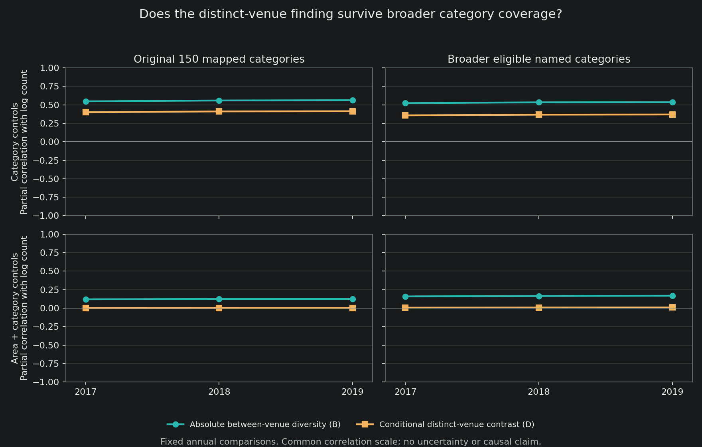

Complete authored note 111 and frozen protocol, with the full reviewed table and graph. Earlier same-sample comparison | Source manifest
20 October 2026. Completed descriptive sample-selection sensitivity, with independent code and exact-aggregate disclosure review. This follows notes 106 and 108; it is not a new primary specification, preregistration, causal estimate or upstream replication.
Main finding
The earlier qualification is not confined to the original 150 categories. Removing the workforce-bridge match restriction expands the eligible subcategory sample to 269 in 2017, 267 in 2018 and 282 in 2019. After additive area and category controls, the partial correlations between log venue count and the conditional distinct-venue contrast are 0.006422, 0.008313 and 0.008975. They are small positive point estimates, not estimates of exactly zero.
In the broader 2019 sample, the original absolute between-venue component has correlation 0.168015, compared with 0.008975 for the contrast conditional on selecting different venues. The separation share remains positively associated with count, at 0.178317. Without area controls, the distinct-venue correlation is 0.369671. Thus geography and the comparison object materially affect the descriptive finding.
In plain language: places with more recorded venues still look more separated under the original measure. But, after the same geographic and service adjustments, there is little linear association between venue count and how different two distinct venues’ clientele compositions are. This does not establish that venues are alike, that mixing is unimportant, or that adding venues would have no effect.
Data and measures
The local calculation uses the three previously authorized annual final POI files for 2017-2019, constructed from Advan mobility data supplied through Dewey and inherited home-area demographic assignments. The originals are read-only. It does not reconstruct original weekly flows or certify their upstream construction.
Each analytical cell is a recorded area, POI subcategory and year. Let denote a venue’s four-group visitor-origin racial-composition vector, and let be its inherited annualized matched-visit weight normalized to sum to one within the cell. Home-area shares are proxies, not observed individual race or simultaneous encounters.
Writing , the measures are
is average within-venue racial fractionalization; is the absolute between-venue component; is its share of pooled diversity. Define
measures the composition contrast conditional on two independent weighted venue draws selecting different recorded venues. The identity separates the chance of selecting different venues from their conditional contrast. It does not identify causal mechanism shares. Conditioning both independent draws on being different is not the same as drawing the first venue and then renormalizing the second draw.
is not a share of pooled diversity and can exceed . It is not a sampling-noise correction. It also changes if one recorded venue is split into identical copies, so its near-zero association does not make it an automatically superior measure. Both objects and all results are retained.
Exact comparison
For each year and sample separately, the reported statistic is
where is eligible recorded venue count and removes either subcategory fixed effects or additive recorded-area and subcategory fixed effects. The latter is not an area-by-subcategory interaction. These are equal-cell partial correlations, not outcome-unit slopes. Visit weights operate inside each cell’s measures. Years are not pooled.
The mapped sample retains the frozen 150-category workforce bridge. The broader sample removes only that match requirement and keeps all named categories meeting the inherited rules. Both retain the same common race/income validity masks, positive valid weights and geography, at least two venues per cell, pooled racial diversity of at least 0.05, and at least 20 eligible areas per category. Thus the broader sample is not all provider POIs, nor a sample free of missing-income selection. Neither sample here is the stable-ID sample. The 933 recorded areas are not asserted to be 933 verified metropolitan areas.
This specification was frozen after the earlier S/B/W and mapped-D results were known, but before the broader D estimates were inspected. No additional outcomes, controls, subgroup searches, uncertainty estimates or causal regressions were added.
Complete results
All values are partial correlations with log recorded venue count, rounded to six decimals. The S/B/W columns reproduce note 106. The mapped D entries reproduce note 108’s all-eligible sample. Only the six broader D estimates are new empirical correlation values. Counts and models are retained in full, rather than selecting the largest or smallest association.
| Year | Sample | Controls | Separation S | Between B | Within W | Distinct D |
|---|---|---|---|---|---|---|
| 2017 | Mapped | Category | 0.559368 | 0.547308 | 0.288865 | 0.400225 |
| 2017 | Mapped | Area + category | 0.137254 | 0.119511 | -0.010222 | -0.000054 |
| 2017 | Broader | Category | 0.537360 | 0.522972 | 0.285001 | 0.357944 |
| 2017 | Broader | Area + category | 0.170634 | 0.158982 | -0.004153 | 0.006422 |
| 2018 | Mapped | Category | 0.563781 | 0.558842 | 0.301187 | 0.411219 |
| 2018 | Mapped | Area + category | 0.139894 | 0.124787 | -0.004672 | 0.002248 |
| 2018 | Broader | Category | 0.541550 | 0.534132 | 0.296859 | 0.367145 |
| 2018 | Broader | Area + category | 0.173324 | 0.164406 | 0.002278 | 0.008313 |
| 2019 | Mapped | Category | 0.567627 | 0.563471 | 0.304730 | 0.413695 |
| 2019 | Mapped | Area + category | 0.140757 | 0.124670 | -0.010357 | 0.002518 |
| 2019 | Broader | Category | 0.543693 | 0.536624 | 0.299586 | 0.369671 |
| 2019 | Broader | Area + category | 0.178317 | 0.168015 | -0.003717 | 0.008975 |
The two control specifications use identical support within each sample-year. There are no confidence intervals, significance stars or equivalence tests. The new broader estimates are somewhat larger than their mapped counterparts; the conclusion is a small descriptive gradient, not identical estimates.
| Year | Sample | Categories | Areas | Cells | POI-years |
|---|---|---|---|---|---|
| 2017 | Mapped | 150 | 933 | 75,320 | 2,675,114 |
| 2017 | Broader | 269 | 933 | 82,364 | 2,708,843 |
| 2018 | Mapped | 150 | 933 | 77,182 | 2,880,329 |
| 2018 | Broader | 267 | 933 | 84,500 | 2,916,032 |
| 2019 | Mapped | 150 | 933 | 82,032 | 3,247,365 |
| 2019 | Broader | 282 | 933 | 91,098 | 3,291,988 |

Full-precision table and complete reviewed summary.
Implication for the paper
Retain the measurement-led descriptive question; narrow the count-based mechanism claim. Broadening the categories does not restore a large area/category-adjusted D correlation. The positive original count pattern alone cannot establish that more options create increasingly different clienteles. Neither this result nor the accounting identity proves that visit concentration explains the original association causally.
The next substantive step is not to search for categories or controls that restore a preferred sign. Questions about common accessible destinations, product differences or origin-specific choices need their separately authorized inputs and opportunity-set checks. This sensitivity does not clear those gates or establish a publishable standalone count paper.
This completes the previously unrun broader-category D comparison mentioned in note 108’s published report. It leaves the original result and stable-ID comparison intact. The broader sample’s stable-ID version has not been estimated.
Verification and limitations
The local production pass took 486.956 seconds, approximately 8.1 minutes. Note 106’s saved cells did not contain squared weights, so obtaining required one new approved read-only pass over the existing annual final files. All original hashes, sizes and modification times matched afterward. No new raw source was acquired or original overwritten.
The 36 note-106 correlations reproduce within . The 24 mapped note-108 comparisons, which overlap that family, reproduce within . An independent sparse fixed-effect projection agrees on all 48 values within . Independent review also checked the national support and cumulative disclosure risks before clearing only the precise release whitelist. The released CSV and graph replay byte-for-byte without opening private data.
All 28 focused tests pass. Two pre-production guard defects were corrected: integer count reconciliation now requires exact equality, and candidate digests must be valid SHA-256 strings rather than merely equal objects. Those synthetic/software checks are not independent upstream data replication.
Uncertain geography vintage, missing/suppressed origins, inherited annualization, observation error, provider coverage and the earlier failed inference gates remain. Four-group area composition does not reveal an individual’s race, personal income, conversation or attitude. No estimate here concerns workers’ observed interactions, an attitude effect or historical Green Book persistence.
Source snapshots
These are dated, unchanged-byte copies of the complete listed sources, not live repository access. This follow-up supersedes the earlier statement that the broader-category D comparison is unrun; it does not replace note 108's original 150-category or stable-ID results. The private construction record and detailed cells are not published.
Complete research note 111 SHA-256 cd5be758325c8a84f6515a9c1b357ae91adc2b87c5c18a74c65917c2ee2dd49d
Complete frozen sensitivity protocol SHA-256 07cd12c3409f077ff735a98aba147fdf930814f5977b1dedae082746a31a7ec2
Complete reviewed national model summary SHA-256 b96a1eed63e12809f82c2f7f0453c8546a66ff08e508af98eee189779dd5b96a
Complete full-precision results SHA-256 72f58e532098da7da58d0d9efc785933334d3c9a4d5f80379d7ac8fe706751a1
Complete reviewed graph SHA-256 d591a6fb349270844f421e796a216c5093eb835cdabfbbbda567d6995c4a327e

Complete aggregate review receipt SHA-256 aafec4eb1efeff2128561f288c12948c8d4b02b0663034bdcc4373cf09207816
Complete table/graph replay receipt SHA-256 b1313ef4b539c63b19eb68a9111ffdfbe2ea8a882f34aa3feaf422e2a88d9536
Frozen protocol
Broader-category distinct-venue comparison
20 October 2026. Locked before inspecting broader-category D results, after notes 106 and 108 are known. This is a post-result sensitivity, not a new primary specification or preregistration. Earlier protocols remain unchanged.
Question
Does note 108’s near-zero area/category-adjusted association between recorded venue count and conditional distinct-venue composition contrast also hold when the workforce-bridge category restriction is removed?
Note 106 broadened the category sample for S, B and W but did not compute D. Its private cell files lack the squared-weight sum needed for D; do not impute it from venue count or treat equal venue weights as equivalent.
Authorized inputs and construction
Use only the three explicitly approved final poi_indices_harmonized_2017.parquet, 2018 and 2019 files, with their existing frozen hashes and approved private configuration. Reuse the frozen 150-category bridge without modifying it or opening employee workbooks. No original weekly flow, annual-flow, new ACS or other dataset is approved.
Reuse note 106’s exact common-valid flag construction, named-subcategory rule, recorded-area normalization and within-cell weights. Recompute its mapped and all-named-category cell moments and add sum(w*w) in the same valid population. Require exact key coverage and numerical agreement on count and total weight. For each cell let H=sum(w*w)/sum(w)^2, effective count=1/H, and D=B/(1-H). Check finite moments, 1 <= effective count <= recorded count and the inherited pair-contrast domain. No undefined D cell may be silently dropped.
The historical final-file permission of 19 October covers this venue-count check. Original files are read-only, detailed cells stay outside Git/AI context, and no broadening of the separate pending income-pilot approval is implied.
Complete fixed family
For each of 2017, 2018 and 2019, estimate the same two specifications: category controls and additive recorded-area/category controls. Separately run the original mapped categories and all eligible named categories. This gives 12 model records, not a pooled-year regression.
For each record retain partial correlations of log recorded venue count with:
- S = between/pooled racial fractionalization.
- B = absolute between-venue racial diversity.
- W = weighted average within-venue racial diversity.
- D = composition contrast conditional on independent weighted venue draws selecting different recorded venues.
The model weights cells equally; venue composition uses the inherited annualized matched-visit weights within cells. The same four origin-race groups, common race/income validity, minimum two venues, pooled diversity >=0.05 and minimum 20 eligible areas per category apply. The expanded sample is not the stable-ID sample. No additional outcome, control, threshold, year, subgroup, p-value, standard error or causal estimate will be searched.
Checks and release
Require all 36 note-106 correlations and corresponding support totals to reproduce within 1e-8, and all 24 mapped-category note-108 correlations (including its six D values, original all-eligible sample) to reproduce within 1e-8. Recheck the added-category support screen in every year. Verify all 48 correlations using the independent sparse dummy-variable projection. All original source hashes and execution-code/protocol/baseline hashes must match before/after. A failure withholds the whole new family.
Preserve all source cells, provenance details, exceptions and preliminary candidate results privately. A separate reviewer checks the code on synthetic data first, then only the exact aggregate candidate/gate for disclosure and cumulative-release risks. Release only the reviewed national model family, support totals, reconciliation maxima, source/code hashes, runtime and environment. No detailed cells, labels, weight moments, residuals or reconstructable small differences enter the public output.
Decision
Report the entire fixed family regardless of sign. If the adjusted D result remains small, narrow the nominal-count mechanism interpretation further. If it changes in the broader sample, report sample selection as a material qualification, without selecting favourable categories. Neither outcome identifies a causal availability effect, preferences, simultaneous encounters or the absence of a meaningful population effect. Correlation magnitudes without uncertainty are not an equivalence test.